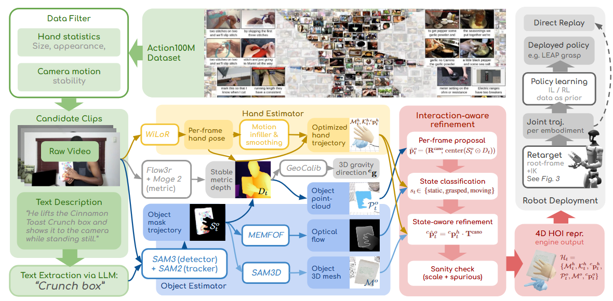
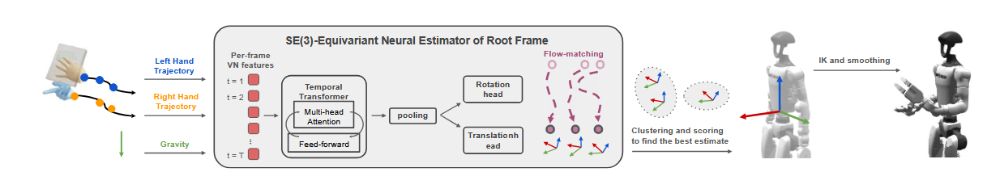
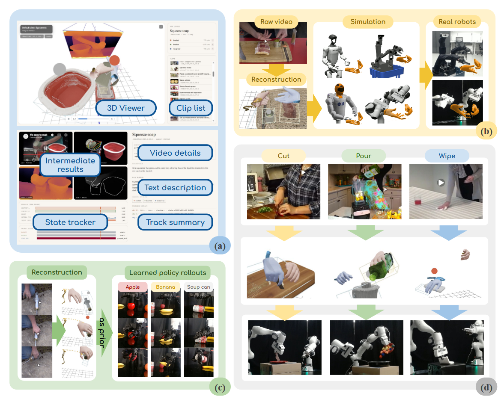

2026 EgoInfinity¶
EgoInfinity: A Web-Scale 4D Hand-Object Interaction Data Engine for Any-View Robot Retargeting and Video-to-Action Robot Learning¶
作者与机构：Gaotian Wang、Kejia Ren、Andrew Morgan、Yiting Chen、Howard H. Qian、Podshara Chanrungmaneekul、Kaiyu Hang；作者来自 Rice University 与 Robotics and AI Institute。
发表信息：arXiv:2606.17385，2026 年 6 月提交，当前笔记对应 v2。EgoInfinity 更适合被理解为持续生成数据的 data engine，而不是一份已经固定的数据集或一个端到端机器人策略。
1. 研究意义¶
a. 研究背景：所描述的场景、背景¶
互联网视频记录了大量真实的人类操作：切割、倾倒、擦拭、抓取，以及不同环境中的工具使用。以 Action100M 为例，其规模约为 12.7 万小时、1.47 亿个动作片段。相比为机器人逐条遥操作采集演示，公开视频的任务、物体和场景更加丰富，也不需要让采集者佩戴动作捕捉设备。
但普通 RGB 视频不能直接作为机器人动作数据。它通常没有深度、相机标定、物体 CAD 模型、六自由度位姿、接触状态与机器人关节命令；拍摄视角还可能是第三人称，画面只包含手而没有完整人体。因此，“视频很多”不等于“可执行的机器人数据很多”。
EgoInfinity 的目标是把近似静态相机拍摄的野外 RGB 视频转换为统一度量空间中的 4D 手—物交互表示，包括 MANO 手网格与关键点、手轨迹、物体点云与网格、物体 6-DoF 轨迹及接触相关状态。随后，它把与具体智能体无关的手部运动编译到不同机器人本体，使同一段视频能够服务于运动重定向和策略学习。
b. 问题及挑战：核心、重要、未解决的问题是什么¶
-
不同视觉模块的输出并不天然一致。 单目深度、手重建、物体分割和三维重建可能分别工作正常，但它们的尺度、坐标系与时间稳定性不同。简单串联会产生手与物体大小不匹配、接触位置漂移等问题。
-
遮挡下的纯视觉物体跟踪不可靠。 手抓住物体后会遮挡关键纹理；静止物体也可能因深度噪声发生漂移。若逐帧完全相信视觉估计，恢复出的轨迹可能违反“抓住后手物应共同运动”这一物理常识。
-
从手轨迹到机器人动作存在跨本体差异。 人手轨迹不包含目标机器人躯干或基座的位置。不同机器人的臂长、自由度、关节限位和工作空间不同；任意放置根坐标系都可能导致逆运动学不可达。
-
互联网规模要求自动化与可升级性。 人工指定目标物、修正轨迹或逐条标注接触状态无法扩展到海量视频。与此同时，系统依赖多个快速演进的基础模型，需要允许单独替换模块，而不是每次重做整套方法。
2. 研究现状¶
a. 领域的现状：针对上述问题及挑战，当前有哪些方法和技术，着重一个技术分类¶
现有机器人可用数据大致来自三类来源。
-
实验室或可穿戴设备采集的人类数据，如 Ego4D、EgoDex、HOT3D 和 OakInk2。它们能提供较高质量的第一视角、跟踪或动作捕捉信息，但受设备、环境和参与者规模约束。
-
遥操作或多机器人聚合数据，如 DROID 与 Open X-Embodiment。这类数据直接包含机器人动作，适合策略学习，但采集成本高，任务与硬件覆盖仍受限制。
-
从人类视频中恢复任务、观测或动作信息的方法。任务层方法用 VLM 理解意图；观测层方法使用视频翻译或视觉表征缩小人机外观差异；动作层方法提取 affordance、点轨迹或 latent action。EgoInfinity 属于动作层、交互中心路线，但输出的是带度量尺度的手与物体三维结构，而不是二维伪动作。
在跨本体重定向方面，已有方法通常面向特定机器人类别，例如灵巧手、平行夹爪或人形机器人。它们在源演示与目标本体结构接近时有效，但互联网视频经常缺少完整手臂和人体信息，难以先恢复人体再做精确运动学模仿。
b. 问题的现状：针对以上技术，这些技术有哪些不足之处¶
受控采集的数据质量较高，却很难同时获得互联网级规模与开放世界多样性；互联网视频规模大，却缺少机器人执行需要的物理量。仅利用语义或二维点轨迹，仍需解决尺度、深度和可达性；仅把多个现成视觉模型串起来，也不能自动保证跨模块几何一致或手物接触合理。
与并行工作的 EgoGrasp 相比，EgoInfinity 都会从视频恢复世界空间的手物交互，并在抓取状态下让手运动约束物体。EgoGrasp 面向动态第一视角，借助类似 SLAM 的相机估计、全身 SMPL-X 先验和学习式扩散先验；EgoInfinity 则限定近似静态相机，不恢复全身，用确定性交互状态与刚性手物绑定换取语料级处理的可扩展性。
3. 技术路线¶
a. 问题与技术映射：针对上述问题，采用了哪些技术手段¶
针对规模问题，EgoInfinity 使用两阶段筛选，只对含手且具有有效运动、相机较稳定的片段运行完整重建。针对跨模块不一致，以 MoGe-2 的度量尺度和焦距、Flow3r 的逐帧深度、GeoCalib 的重力方向建立共同几何坐标。针对手物漂移，自动发现并跟踪目标物，再根据 static、grasped、moving 三类交互状态选择不同的物体位姿来源。针对跨本体执行，训练具有 SE(3) 等变性的生成式根坐标系估计器，再通过候选筛选、IK 和轨迹后处理得到机器人关节序列。
整体链路可以概括为：
互联网 RGB 视频 + 文本描述
↓
轻量扫描与有效片段筛选
↓
统一度量几何、手重建、物体发现/分割/重建/跟踪
↓
基于交互状态的轨迹修正
↓
智能体无关的 4D 手物表示
↓
机器人特定根坐标系估计 + IK + 后处理
↓
可执行关节轨迹 / 策略学习先验

b. 技术详述：对每个技术方法进行详细介绍¶
两阶段数据引擎：先筛选，再运行昂贵模块。 第一阶段扫描视频中的手部片段，根据手运动统计和相机稳定性过滤；第二阶段只处理保留下来的活动片段。视频文本描述被用作 SAM 3 的语义提示，从而自动发现目标物，无需逐段由人指定物体。这个设计把昂贵三维重建的计算集中在更可能含有效操作的片段上，但也会让前置筛选的偏差影响最终数据分布。
跨模块度量标定：让手和物体进入同一三维世界。 MoGe-2 估计相机焦距和全局度量尺度，Flow3r 提供稠密逐帧深度，GeoCalib 给出相机坐标中的重力方向。WiLoR 预测 MANO 手参数、网格、关键点与全局手位姿，缺失或不稳定帧再由补全模块修复。共享的尺度和相机坐标系是计算手物距离、判断交互和后续重定向的基础。
物体端先由 SAM 3 根据文本检测目标，再用 SAM 2 在时间上传播掩码，并结合深度反投影为点云。视觉证据充分时，SAM 3D Objects 重建物体网格；FoundationPose++ 综合网格、掩码和点云估计六自由度轨迹。最终每帧状态可写为：
其中手和物体量都位于相机坐标系并采用统一度量尺度。
交互感知修正：根据状态决定应该相信谁。 系统从 MEMFOF 光流和手关键点判断物体处于 static、grasped 或 moving。若物体被抓住，就用手坐标系与规范变换将物体刚性绑定到手：
若物体静止，则锁定到鲁棒点云中心；若物体在移动但没有被可靠抓持，则保留来自掩码与深度的逐帧位姿提议。最后再用尺度与背景检测等 sanity check 抑制明显错误。这不是精确的接触力学优化，而是利用交互状态在多个噪声来源之间切换信任。
外部视角到第一视角：重排坐标，而不是生成像素。 系统已经恢复三维场景，因此所谓 exo-to-ego 并非用生成模型把第三人称图像改画成第一人称图像。它以双手中点等手部信息构造虚拟相机，以重力方向定义上轴，再从新的相机坐标重渲染手、物体与轨迹。这样避免了二维视频翻译中的像素幻觉，但结果质量仍受三维重建准确度限制。
生成式根坐标系估计：为不同机器人寻找可达的身体位置。 输入是相机坐标系中的单手或双手 SE(3) 轨迹和可选重力，网络 \(\Phi\) 输出机器人根坐标系 \({}^{c}\mathbf{p}^{r}\)。Vector Neuron 层、VN-Transformer 和以手轨迹质心为中心的输入使其满足 SE(3) 等变关系：
模型不直接回归单一答案，而用 flow matching 建模多个可能根位姿，因为同一段局部手运动可能对应多种合理身体位置。推理时从均匀旋转和手部质心附近的平移先验出发，用 20 个 Euler 步积分得到候选。

仿真训练与 IK 筛选：用目标机器人自身约束选择候选。 每种机器人单独在 MuJoCo 中生成训练对：通过 Ornstein–Uhlenbeck 随机游走采样平滑笛卡尔轨迹，以 IK 转为关节轨迹，并随机放置相机。训练加入位置/旋转噪声、跟踪跳变、手遮挡、重力扰动与后视相机等增强；其中 30% 样本丢弃重力，使模型在缺少重力估计时仍可运行。
推理时在重叠窗口中预测多个根位姿，用 SE(3) 距离聚成 5 个候选，通过 IK 收敛率、跟踪残差、可操作度、关节限位余量与平滑性评分选出结果。窗口估计经过平移/旋转插值与高斯平滑，IK 失败帧再由相邻成功帧插值。灵巧手的手指关节另由 MANO 关键点映射，腕部仍遵循手臂 IK。
c. 创新之处：你认为的上述方法中，最关键的技术是什么¶
我认为最关键的不是某一个基础视觉模型，而是把统一度量的 4D 手物表示定义为视频与机器人之间的中间接口，并用交互状态修复这个接口。它保留了比二维轨迹更接近执行的尺度、位姿和接触线索，又没有直接绑定某一台机器人的关节空间。
另一个重要贡献是把根坐标系选择从人工放置转化为机器人特定的条件生成问题，再以 IK 可行性进行后验筛选。SE(3) 等变结构负责视角变化，flow matching 保留多解，机器人的运动学指标负责选择可执行解。这比直接复制人体姿态更适合只有局部手部画面的互联网视频。
4. 实验分析¶
a. 实验数据：论文中使用了哪些实验数据¶
论文主要从数据引擎、跨本体重定向和真实机器人执行三个层次进行验证。
| 评测层次 | 数据或平台 | 规模与任务 |
|---|---|---|
| 语料与可视化 | Action100M 筛选片段 | 公开 106 个处理后视频；88% 视频、47% 检出物体发生了操作 |
| 仿真重定向 | Unitree G1、Robonaut2、dual-Franka FR3 | 在处理后数据上统计逐帧 IK 与轨迹指标 |
| 端到端样例 | dual-Franka、G1、Robonaut2、XLeRobot；两种真实平台 | 10 个视频样例展示从外部视角视频到多本体运动 |
| 真实执行 | 双臂 Franka FR3 | Cut、Pour Bowl、Pour Glass、Wipe Box、Wipe Computer |
| 下游策略 | 真实 LEAP 灵巧手 | 苹果、香蕉、番茄罐各展示 3 次抓取 rollout |

论文将可处理语料上限写为 Action100M 的约 12.7 万小时，而当前公开的处理后子集只有 106 段。前者代表潜在输入池，不等于已经全部运行 EgoInfinity 并验证质量的数据量。
b. 对比实验：与其他算法对比，突出数值的变化¶
数据规模表是属性比较，而不是同一任务上的性能比较。 EgoInfinity 在论文表 1 中同时具备互联网来源、全自动生成、不要求穿戴设备、不要求人工指定物体和度量 4D 输出。相邻数据集规模包括 Ego4D 3.7K 小时、EgoDex 829 小时、HOT3D 13.9 小时、OakInk2 6.5 小时、DROID 350 小时；EgoInfinity 标注 127K 小时，但该数字来自上游 Action100M 的可寻址规模，不应解释为 127K 小时数据已经通过质量验收。
跨本体重定向给出了绝对指标，但没有与其他重定向算法在统一协议下对比。 表 2 的主要结果如下：
| 机器人 | 逐帧 IK 成功率 | 位置误差 | 朝向误差 | 关节限位余量 |
|---|---|---|---|---|
| Unitree G1 | 82.1% | 2.86 cm | 6.73° | 0.619 rad |
| Robonaut2 | 77.4% | 6.67 cm | 8.25° | 0.134 rad |
| Dual-Franka | 70.6% | 10.27 cm | 12.17° | 0.572 rad |
Unitree G1 在这三种本体上具有最高 IK 率和最低位姿误差，Dual-Franka 的误差最大。不过，这些差异同时受到机器人结构、双臂工作空间、根坐标定义和评测轨迹影响，不能直接当作模型对某种机器人的泛化排名。
真实机器人部分展示了端到端可执行性：从公开视频恢复的动作能够在双臂 Franka 上完成切割、倾倒与擦拭；EgoInfinity 手轨迹也能作为 LEAP 抓取策略的先验。论文没有报告每项任务的试验总数、成功次数或与基线的成功率对照，因此这些结果支持“链路可以跑通”，尚不足以估计鲁棒成功率。
c. 消融实验：与自己对比，突出数值的变化¶
论文没有提供独立模块消融。 没有分别移除统一度量标定、交互感知修正、SE(3) 等变结构、flow matching、候选 IK 评分或数据增强来衡量下降幅度。因此，不能从现有数字判断哪个模块贡献最大。
| 需要验证的设计 | 现有证据边界 | 建议补充的对照，非论文已有结果 |
|---|---|---|
| 跨模块度量标定 | 有方法描述和可视化 | 原始模块输出 vs 统一尺度/坐标后的手物距离与位姿误差 |
| 交互感知修正 | 展示抓取绑定机制 | 纯视觉跟踪 vs 状态修正，比较漂移和接触穿透 |
| SE(3) 等变根估计 | 有结构设计 | 普通 Transformer vs VN-Transformer，测试新相机视角 |
| Flow Matching | 有多解动机 | 确定性回归 vs 生成式候选，比较 IK 成功率与候选多样性 |
| IK 后验筛选 | 报告最终 IK 指标 | 随机/单候选 vs 聚类与运动学评分 |
| 数据增强 | 列出噪声参数 | 逐项移除遮挡、跳变、重力丢弃和后视相机增强 |
d. 实验总结¶
-
实验覆盖了数据到动作的完整链路，但定量证据集中在可达性。 106 段数据、三种本体的 IK 统计和真实机器人样例证明系统具有较广接口；然而感知精度、接触一致性和任务成功率缺少统一基线。
-
“Any-view”与“any robot”应按论文设定理解。 任意视角主要指无需完整人体、可以把恢复出的三维场景重新定坐标；当前仍假设相机近似静态。任意机器人意味着框架可为不同本体训练根估计器，并不意味着新机器人无需训练或标定即可零样本接入。
-
系统价值更像数据基础设施，而非已经验证的数据规模定律。 模块化、浏览器可检查和中间量可下载便于后续策略使用，但论文尚未展示随着处理视频数量增长，机器人策略性能如何系统提升。
5. 不足之处¶
-
近似静态相机假设限制了视频覆盖。 手持、头戴和快速运动镜头被排除，恰好损失了一部分自然第一视角操作数据。未来可以引入 SLAM-aware depth 或显式相机轨迹，但这也会增加尺度漂移与动态场景分解难度。
-
交互修正仍是粗粒度接触模型。 刚性绑定可以减少抓持阶段的视觉漂移，却不能保证指尖精确落点、无滑移、力一致或接触时序，也没有触觉信号。透明、反光物体、严重遮挡和错误分割仍会导致深度噪声、点云缺失或网格错误。
-
重定向并非对新机器人真正零成本。 根坐标估计器按机器人在仿真中单独训练，新结构可能需要重新训练或标定；功能重定向保留腕部任务运动，但不追求精确人体运动学复现。依赖手姿、精细接触或高速动力学的任务可能需要新的状态与控制层。
-
实验缺少强基线、模块消融和统计成功率。 当前结果很难把收益分解到感知模型、交互规则、等变网络或 IK 选择，也无法判断真实执行在重复扰动下是否稳定。后续应报告手/物轨迹真值误差、接触一致性、每任务成功率和置信区间，并统一对比视频到动作及重定向方法。
-
自动数据引擎会继承上游模型与网络语料的偏差。 文本描述决定目标物提示，筛选器决定哪些动作进入处理，多个视觉模型共同决定最终标签。sanity check 主要抑制或标记极端异常，并不能保证所有自动标签可靠；大规模训练前仍需要质量分层、置信度建模和抽样审核。
6. 基于本文扩展到的其他论文¶
-
EgoGrasp: World-Space Hand-Object Interaction Estimation from Egocentric Videos，2026。
-
与 EgoInfinity 最直接相关，关注动态第一视角中的世界空间手物恢复，并使用全身先验与学习式轨迹修正。
-
可以对比两种取舍：EgoInfinity 的静态相机与确定性状态规则更易扩展，EgoGrasp 的相机运动建模与学习先验覆盖更自然的视频条件。
-
-
Track2Act: Predicting Point Tracks from Internet Videos Enables Generalizable Robot Manipulation，2024，ECCV。
-
Track2Act 以视频点轨迹连接互联网视频和机器人动作，代表更轻量的二维运动中间表示。
-
可进一步研究何时二维轨迹已经足够，何时必须支付 EgoInfinity 三维重建与度量标定的成本；比较应控制上游视频、策略与机器人执行器。
-
-
EgoMimic: Scaling Imitation Learning via Egocentric Video，2025，ICRA。
-
EgoMimic 研究如何把第一视角人类视频与机器人数据共同用于模仿学习，重点更接近下游策略训练。
-
EgoInfinity 可以作为上游数据引擎，为 EgoMimic 类策略提供统一尺度的手物轨迹与交互状态；关键验证是这些结构化标签能否带来稳定的数据规模收益。
-